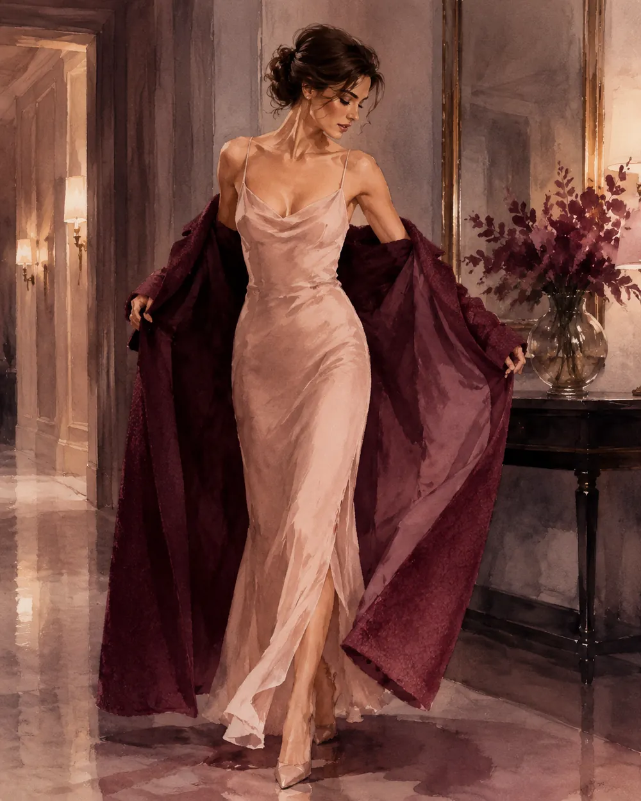

Lietuvių kalba rusakalbiams · anacka.lt
Литовский, разобранный до косточек
Не списки слов, а системы: почему форма именно такая, что ею управляет и где русский язык подставляет подножку. Материалы курса anacka.lt.

Курс литовского языка
Справочники на этом сайте — часть большого курса. Начать можно бесплатно.
Одежда, обувь и украшения
Тема разобрана как система: сначала семь глагольных корней и карта тела, потом слова, которые в эту систему встают.
ГрамматикаСемь корней одеванияПочему литовец говорит apsivilkti paltą, но apsiauti batus и užsimauti pirštines — и как выучить это одной таблицей.ЛексикаСловарь: одежда, обувь, украшенияОт пуховика до язычка ботинка. Каждое существительное с пометой jis или ji и формой множественного числа.РечьПрактика: примерка, уход, сезоны«Мне жмёт в плечах», «можно померить», «село после стирки» — и что литовцы носят в каждый из четырёх сезонов.ТонкостиИдиомы и ошибки русскоязычныхVilkas avies kailyje, ne pagal kišenę — и восемь мест, где русский язык подставляет подножку.ПроверкаТренажёр по глаголам одеванияВыберите глагол и сразу узнайте, какая зона тела его требует.
Грамматические разборы
Отдельные трудные места литовской грамматики — те, где русский язык мешает больше, чем помогает.
МестоименияJOS: «её» или «они»Jõs mama — её мама, но jõs dirba — они работают. Одно слово, два падежа, ни одной подсказки в написании.Падежи · тренажёрДва друга: Vardininkas и GalininkasНазвать. Представить. Взаимодействовать. Предмет, описание, род и число, действие — и своё предложение с проверкой.
Карта тела — с чего начинается тема одежды
Русское «надеть» универсально: надеть шапку, пальто, носки, кольцо, ремень. Литовский так не работает — глагол выбирается по характеру движения, которым предмет попадает на тело.

1 · vilk‑vilkti · vilktis · apsivilktiТорс: всё, что натягивается через рукава и голову. Paltas, marškiniai, suknelė, megztinis.

2 · au‑auti · autis · apsiautiСтопа: обувь и то, что на неё. Batai, bateliai, šlepetės, kojinės.

3 · mau‑mauti · mautis · užsimautiВсё, что натягивается как чехол: kelnės, pirštinės, kojinės, žiedas.

4 · seg‑segti · segtis · užsisegtiПристёгнутое и застёгнутое: sagos, sagė, auskarai, sijonas, prijuostė.

5 · riš‑rišti · rištis · užsirištiЗавязанное узлом: kaklaraištis, šalikas, skarelė, batraiščiai.

6 · juos‑juosti · juostis · apsijuostiТалия: опоясывание. Diržas, juosta.
7 · dė‑dėti · dėtis · užsidėtiГолова и лицо: всё, что просто кладётся сверху. Kepurė, skrybėlė, akiniai, kaukė, ausinės. Снять — nusiimti.